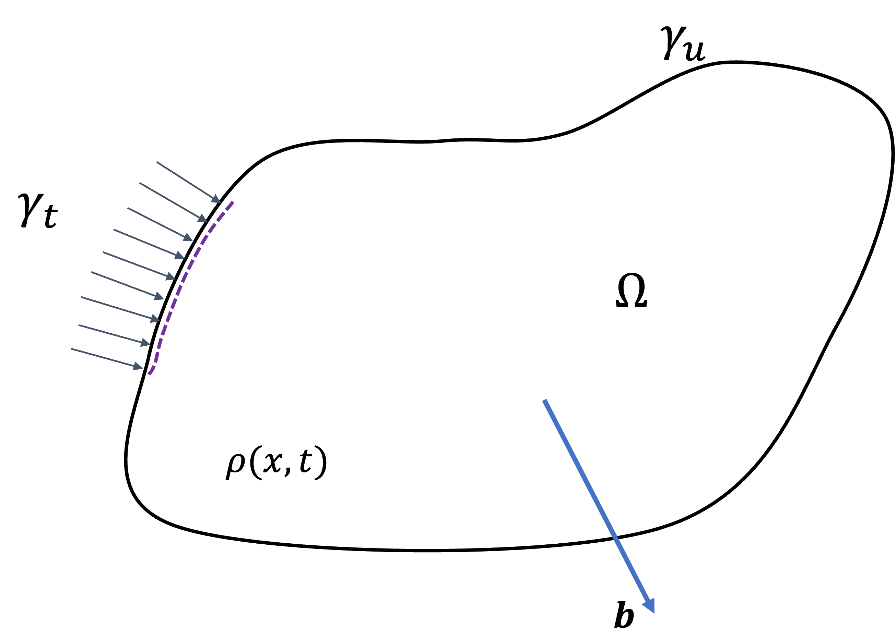
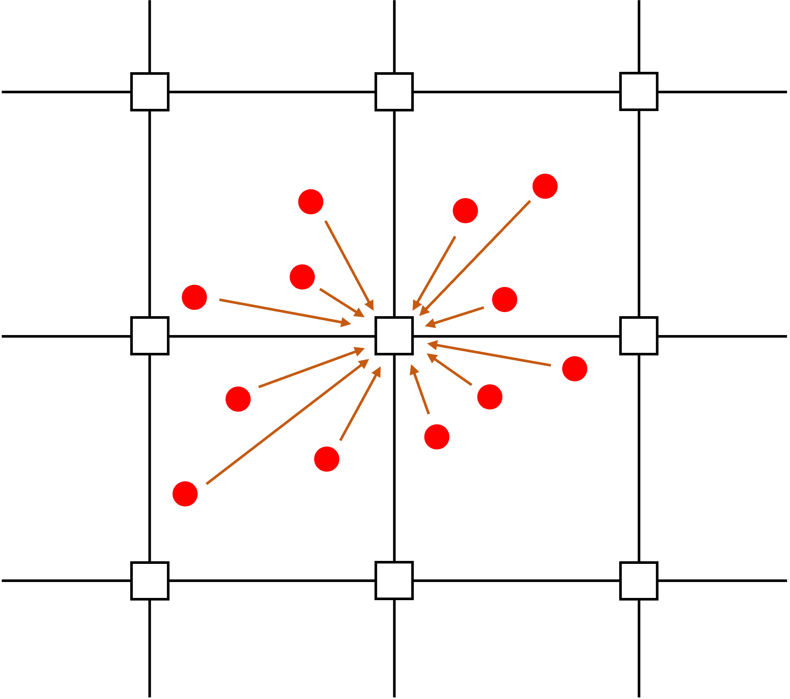
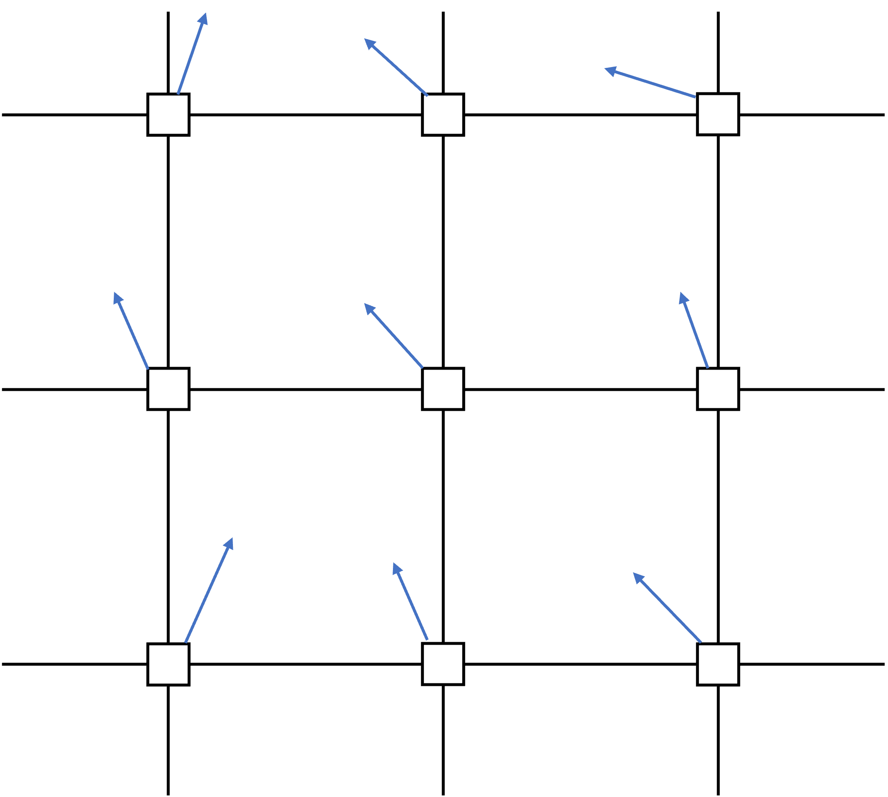
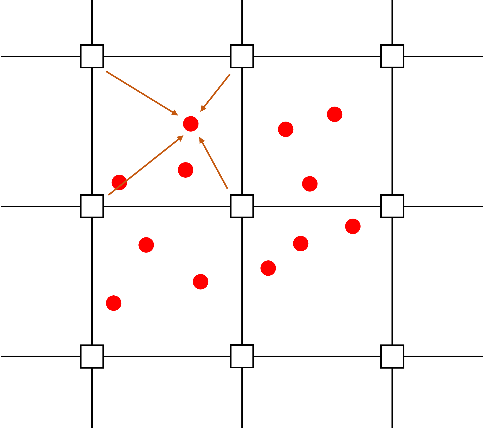
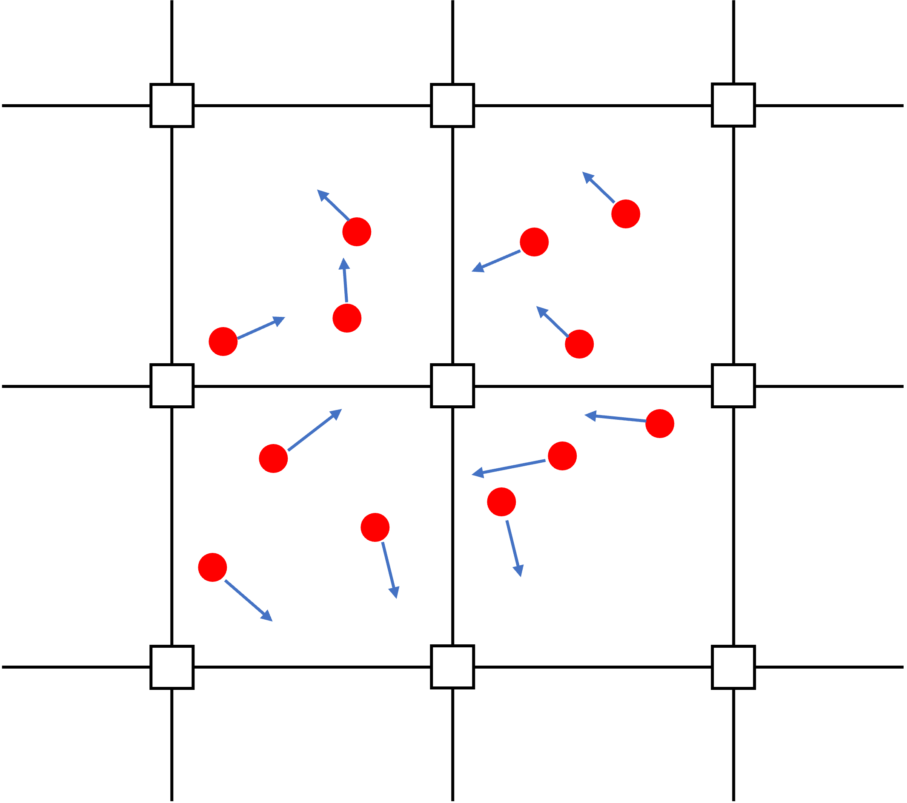

Numerical Methods
This section presents the continuum mechanics governing equations that underpin ExaGOOP, followed by their discretisation within the Material Point Method (MPM) framework.
Governing equations of continuum mechanics
The fundamental equations that underpin the Material Point Method (MPM) are the conservation of mass and linear momentum. The energy equation is handled separately through the optional temperature module (see Temperature Module (USE_TEMP)). Additionally, material elements with internal torques are not considered here, so the angular momentum conservation equation is omitted. In the context of MPM, the laws of mass and momentum conservation are expressed within a Lagrangian framework.
The Lagrangian description of the motion of a particle is expressed in terms of its material coordinates \(X\) and time \(t\). Material coordinates refer to a coordinate system attached to the particle under consideration in its initial configuration (time \(t=0\)). In the Lagrangian description, the particle is assumed to move with the local velocity of the medium, and other continuum properties are studied in this coordinate system.
Hence, the motion of a particle is expressed in the Lagrangian description as,
It is to be noted that by definition, the above particle has the coordinates defined by \(\mathbf{X}\) at time \(t=0\). The displacement \(\mathbf{u}\) of the particle with respect to the initial configuration is then expressed as,
The definition of the velocity of the particle \(\mathbf{v}\) then follows as,
Similarly, the time rate of change of any property of the particle expressed in the Lagrangian framework is its partial time derivative, and \(\mathbf{X}\) simply serves as a parameter. Similar to the expression of velocity given above, the acceleration of the particle can also be expressed as,
Without going deep into the details, some of the mathematical terms used in the governing equations are defined in the following paragraphs.
Deformation gradient tensor
The deformation gradient tensor \(\mathbf{F}\) is defined as,
and is a symmetric, second-order tensor which describes the stretch and rotation of a material element. Mathematically, it is a linear operator that maps the current configuration of a continuum body to its initial configuration.
Velocity gradient tensor
The velocity gradient tensor \(\mathbf{L}\) is defined as the spatial gradient of velocity.
This second-order tensor can be decomposed into a symmetric part (rate of deformation tensor) and an anti-symmetric part (spin tensor) as shown below.
where,
The rate of deformation tensor \(D\) indicates the rate of strain suffered by a material element and is used to find the stresses through a constitutive model. The spin tensor \(\Omega\) refers to the rotation the material element undergoes. The velocity gradient tensor is related to the deformation gradient tensor through the following expression,
Jacobian
The jacobian (\(\mathbf{J}\)) is defined as the determinant of the deformation gradient tensor (\(\mathbf{F}\)).
A necessary and sufficient condition for the motion to be invertible is to have a non-zero Jacobian at all times. The Jacobian also relates the volume of an infinitesimal body at time \(t\) to its volume at the initial time through the relation
where \(\mathrm{d} V\) and \(\mathrm{d} V_0\) are the volumes at current and initial time.
Stress tensor and Constitutive models
The stress tensor \(\mathbf{\sigma}\) is a symmetric, second-order tensor that defines the state of stress at a point. The traction or force per unit area acting at the point on an imaginary surface with normal \(\mathbf{n}\) is related to the stress tensor at the point as,
Stress tensor at a point is related to the rate of deformation tensor \(\mathbf{D}\) through a constitutive relation. Depending on the material considered, a multitude of constitutive relations, such as linear elastic, plastic, and Newtonian fluids, exist.
Equation of conservation of mass
For a continuum body occupying a region \(\Omega\) in space and bounded by a surface \(\Gamma=\Gamma_u \cup \Gamma_t\) as shown in Fig. 1, the total mass \(m\) of the body is given by,

Fig. 1 : Computational domain, boundary and various forces acting on it
where \(\rho\) is the density of the material.
Since the mass contained in the region \(\Omega\) and moving with local material velocity is constant, the total time derivative of the total mass is zero. Hence,
which leads to the mass conservation equation as,
Conservation of momentum
Newton’s second law of motion states that the rate of change of momentum of a body is equal to the sum of the volume and surface forces acting on it. Consider the same body as shown in Fig. 1, with a body force per unit mass \(\mathbf{b}\) and traction \(\mathbf{t}\) acting on it’s surface \(\Gamma_t\). The law of conservation of momentum is expressed as,
By invoking the Reynolds transport theorem and upon simplifying, one obtains,
Initial and Boundary conditions
Two types of boundary conditions are commonly considered, namely boundaries with specified velocity and specified traction, respectively.
Initial conditions involve specifying the displacement of material points and velocities at time t=0.
Note
The equations above define the strong form of the governing equations. The following section derives their weak form and the MPM discretisation used in ExaGOOP.
Governing Equations of MPM
The complete set of governing equations for a non-isothermal problem involving non-polar materials, as discussed in the previous section, is summarized as,
The equation of conservation of mass is not solved explicitly. Instead it is used to calculate the updated density field in the computations through Eq. (1). Like in many finite-element formulations, the method of weighted residuals is used to reduce the residual to zero in an average sense. By taking the virtual displacement \(\delta u_j \in \Re_0, \Re_0=\left\{\delta u_j\left|\delta u_j \in C^0, \delta u_j\right|_{\Gamma_u}=0\right\}\) as the test function, one obtains the weak form of the governing equations and the traction boundary condition as,
which, upon simplification, is shown below.
In the standard formulation of MPM used in ExaGOOP, the density field in the domain is approximated as,
In the above equation, \({n_p}\) is the number of material points and \({m_p}\) is the mass of each material point. Substituting Eq. (3) in Eq. (2) and invoking particle quadrature, one obtains the numerical governing equation of MPM.
The subscipts \(p\) and \(i\) refer to the particle and spatial dimension, respectively. The solution of the numerical governing equation above is carried out in four stages, as briefly discussed in the following section.
MPM discretisation steps
The MPM solution procedure in ExaGOOP begins by generating or reading a collection of material point data from an input file. This material point data includes information on each point’s location, velocity, and flags for the constitutive model. Additionally, a background grid is generated based on user-defined inputs, which specify the entire computational domain. The time integration process then advances through each time step, with each step comprising four distinct sub-steps, as outlined in the following subsections.

(a) particle to grid (P2G) operation

(b) nodal velocity update

(c) grid to particle (G2P) operation

(d) particle position update
{kind=link}
Fig. 2 The four steps involved in one step of MPM time integration. The material points are shown as circles in red color. The nodes are shown as squares with black outline
Particle to Grid Interpolation (P2G)
In this step, the material points are assumed to be attached to the background grid as shown in Fig. 2 (a). The background grid is then considered similar to a finite element grid and based on the shape function defined at the grid node \(I\) the unknown quantities in Eq. (4) are calculated as,
In the equations above, subscript \(I\) is used to denote the grid node and \(N_I\) indicate the shape function defined at node \(I\). ExaGOOP supports linear, quadratic B-spline and cubic B-spline shape functions. Substituting equations Eq. (5) in Eq. (4) and cancelling the common virtual displacement term \(\delta u_{i I}\), one obtains,
where \(m_{I J}\) is the elements of the mass matrix defined as,
and \(f_{i I}^{\mathrm{int}}\) and \(f_{i I}^{\mathrm{ext}}\) are the internal and external forces respectively and given by,
Hence, this step of the MPM solution procedure involves ’projecting’ properties from material points to grid nodes and is shown schematically in Fig. 2 (a).
Temporal integration at grid nodes
Once the grid nodal properties are calculated in the P2G operation, the updated velocity at grid nodes are calculated. In ExaGOOP, an explicit, Euler time integration procedure is used. Since this procedure in its original form involves costly inversion of the mass matrix \(m_{I J}\), the following mass-lumping approximation is made,
The velocity components at the nodes are then calculated as,
where \(\Delta t\) is the time step used in time integration and is calculated from the following equation,
Here, \(c_{()}\) and \(h_{()}\) refer to characteristic velocity and grid sizes in different directions respectively.
Grid to Particle (G2P) Interpolation
Once the updated velocities at grid nodes are obtained, the velocities and their gradients at the material points are obtained in this step as,
The term \(\alpha_{P-F}\) used in the material point velocity update step above determines the level of blending between Particle-in-Cell (PIC) and Fluid Implicit Particle Method (FLIP) like updates. The velocity gradient thus calculated at the material point is used to compute the stress tensor through the user-provided constitutive relation.
Material point position update and grid reset
At this step, the updated velocity at the material point is already obtained and is used to update the material point position as,
The background grid in MPM is used only as a scratch pad to calculate gradients and for time integration and hence is often reset or regenerated at the end of each MPM step.